1 Graphical Tools for Describing One Variable at a Time
1.1 Variables[1]
Variables are properties or characteristics of some event, object, or person that can take on different values or amounts (as opposed to constants such as π that do not vary). When conducting research, experimenters often manipulate or measure variables. For example, an experimenter might compare the effectiveness of four types of antidepressants. In this case, the variable is “type of antidepressant.” This experimenter might also ask study participants to indicate their mood on a scale of 1 to 10. “Mood” would be a second variable.
1.1.1 Qualitative and Quantitative Variables
An important distinction between variables is between qualitative variables and quantitative variables. Qualitative variables are those that express a qualitative attribute such as hair color, eye color, religion, favorite movie, gender, and so on. The values of a qualitative variable do not imply a numerical ordering. Values of the variable “religion” differ qualitatively; no ordering of religions is implied. Qualitative variables are also sometimes referred to as categorical or nominal variables. Quantitative variables are those variables that are measured in terms of numbers. Some examples of quantitative variables are height, weight, and shoe size.
Example: Can blueberries slow down aging? A study indicates that antioxidants found in blueberries may slow down the process of aging. In this study, 19-month-old rats (equivalent to 60-year-old humans) were fed either their standard diet or a diet supplemented by either blueberry, strawberry, or spinach powder. After eight weeks, the rats were given memory and motor skills tests. Although all supplemented rats showed improvement, those supplemented with blueberry powder showed the most notable improvement.
More information: https://www.apa.org/monitor/dec01/blueberries.html
In the study on the effect of diet discussed above, the independent variable was type of supplement: none, strawberry, blueberry, and spinach. The variable “type of supplement” is a qualitative variable; there is nothing quantitative about it. In contrast, the dependent variable “memory test” is a quantitative variable since memory performance was measured on a quantitative scale (number correct).
1.1.2 Discrete and Continuous Variables
Variables such as number of children in a household are called discrete variables since the possible scores are discrete points on the scale. For example, a household could have three children or six children, but not 4.53 children. Other variables such as “time to respond to a question” are continuous variables since the scale is continuous and not made up of discrete steps. The response time could be 1.64 seconds, or it could be 1.64237123922121 seconds. Of course, the practicalities of measurement preclude most measured variables from being truly continuous.
1.2 Percentiles[2]
We will turn our attention to some basic graphical tools we can use to visualize qualitative and quantitative variables in a moment, but first it is helpful to briefly go over percentiles since they will be used in some graphical tools. Many of us have probably encountered percentiles before in the context of standardized exam testing. A test score in and of itself is usually difficult to interpret. For example, if you learned that your score on a measure of shyness was 35 out of a possible 50, you would have little idea how shy you are compared to other people. More relevant is the percentage of people with lower shyness scores than yours. This percentage is called a percentile. If 65% of the scores were below yours, then your score would be the 65th percentile.
1.2.1 Three Alternative Definitions of Percentile
There is no universally accepted definition of a percentile. Using the 65th percentile as an example, the 65th percentile can be defined as the lowest score that is greater than 65% of the scores. This is the way we defined it above and we will call this “Definition 1.” The 65th percentile can also be defined as the smallest score that is greater than or equal to 65% of the scores. This we will call “Definition 2.” Though these two definitions appear very similar, they can sometimes lead to dramatically different results, especially when there is relatively little data. Moreover, neither of these definitions is explicit about how to handle rounding. For instance, what rank is required to be higher than 65% of the scores when the total number of scores is 50? This is tricky because 65% of 50 is 32.5. How do we find the lowest number that is higher than 32.5 of the scores?
A third way to compute percentiles is a weighted average of the percentiles computed according to the first two definitions. The details of computing percentiles under this third definition are a bit complicated, but fortunately, statistical software can easily do the calculations for us. Since it is unlikely you will need to compute percentiles by hand, we leave the details of these computations to the appendix appearing at the end of this chapter. Despite its complexity, the third definition handles rounding more gracefully than the other two and has the advantage that it allows the median to be defined conveniently as the 50th percentile. Unless otherwise specified, when we refer to “percentile,” we will be referring to this third definition of percentiles.
1.3 Graphing Qualitative Variables[3]
When Apple Computer introduced the iMac computer in August 1998, the company wanted to learn whether the iMac was expanding Apple’s market share. Was the iMac just attracting previous Macintosh owners? Or was it purchased by newcomers to the computer market and by previous Windows users who were switching over? To find out, 500 iMac customers were interviewed. Each customer was categorized as a previous Macintosh owner, a previous Windows owner, or a new computer purchaser.
This section examines graphical methods for displaying the results of the interviews. We’ll learn some general lessons about how to graph data that fall into a small number of categories. A later section will consider how to graph numerical data in which each observation is represented by a number in some range. The key point about the qualitative data that occupy us in the present section is that they do not come with a pre-established ordering (the way numbers are ordered). For example, there is no natural sense in which the category of previous Windows users comes before or after the category of previous Macintosh users. This situation may be contrasted with quantitative data, such as a person’s weight. People of one weight are naturally ordered with respect to people of a different weight.
1.3.1 Frequency Tables
All of the graphical methods shown in this section are derived from frequency tables. Table 1.1 shows a frequency table for the results of the iMac study; it shows the frequencies of the various response categories. It also shows the relative frequencies, which are the proportion of responses in each category. For example, the relative frequency for “none” is 85/500 = 0.17.
| Previous Ownership | Frequency | Relative Frequency |
|---|---|---|
| None | 85 | 0.17 |
| Windows | 60 | 0.12 |
| Macintosh | 355 | 0.71 |
| Total | 500 | 1.00 |
1.3.2 Pie Charts
The pie chart in Figure 1.1 shows the results of the iMac study. In a pie chart, each category is represented by a slice of the pie. The area of the slice is proportional to the percentage of responses in the category. This is simply the relative frequency multiplied by 100. Although most iMac purchasers were Macintosh owners, Apple was encouraged by the 12% of purchasers who were former Windows users, and by the 17% of purchasers who were buying a computer for the first time.
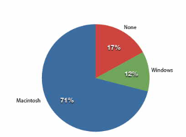
Pie charts are effective for displaying the relative frequencies of a small number of categories. They are not recommended, however, when you have a large number of categories. Pie charts can also be confusing when they are used to compare the outcomes of two different surveys or experiments. In an influential book on the use of graphs, Edward Tufte asserted, “The only worse design than a pie chart is several of them.”
Here is another important point about pie charts. If they are based on a small number of observations, it can be misleading to label the pie slices with percentages. For example, if just 5 people had been interviewed by Apple Computers, and 3 were former Windows users, it would be misleading to display a pie chart with the Windows slice showing 60%. With so few people interviewed, such a large percentage of Windows users might easily have occurred since chance can cause large errors with small samples. In this case, it is better to alert the user of the pie chart to the actual numbers involved. The slices should therefore be labeled with the actual frequencies observed (e.g., 3) instead of with percentages.
1.3.3 Bar charts
Bar charts can also be used to represent frequencies of different categories. A bar chart of the iMac purchases is shown in Figure 1.2. Frequencies are shown on the Y-axis and the type of computer previously owned is shown on the X-axis. Typically, the Y-axis shows the number of observations in each category rather than the percentage of observations as is typical in pie charts.
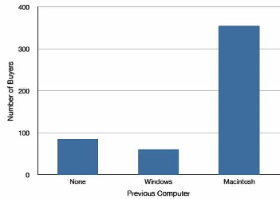
1.3.3.1 Comparing Distributions
Often we need to compare the results of different surveys, or of different conditions within the same overall survey. In this case, we are comparing the “distributions” of responses between the surveys or conditions. Bar charts are often excellent for illustrating differences between two distributions. Figure 1.3 shows the number of people playing card games at the Yahoo website on a Sunday and on a Wednesday in the Spring of 2001. We see that there were more players overall on Wednesday compared to Sunday. The number of people playing Pinochle was nonetheless the same on these two days. In contrast, there were about twice as many people playing hearts on Wednesday as on Sunday. Facts like these emerge clearly from a well-designed bar chart.
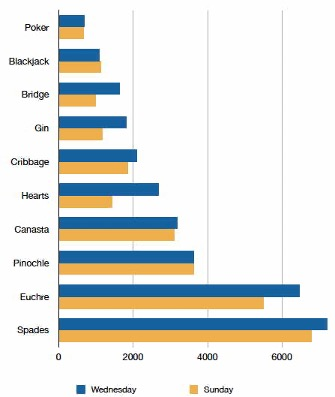
The bars in Figure 1.3 are oriented horizontally rather than vertically. The horizontal format is useful when you have many categories because there is more room for the category labels. We’ll have more to say about bar charts when we consider numerical quantities later in the section Bar Charts.
1.3.4 Some graphical mistakes to avoid
Don’t get fancy! People sometimes add features to graphs that don’t help to convey their information. For example, 3-dimensional bar charts such as the one shown in Figure 1.4 are usually not as effective as their two-dimensional counterparts.
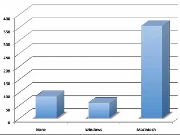
Here is another way that fanciness can lead to trouble. Instead of plain bars, it is tempting to substitute meaningful images. For example, Figure 1.5 presents the iMac data using pictures of computers. The heights of the pictures accurately represent the number of buyers, yet Figure Figure 1.5 is misleading because the viewer’s attention will be captured by areas. The areas can exaggerate the size differences between the groups. In terms of percentages, the ratio of previous Macintosh owners to previous Windows owners is about 6 to 1. But the ratio of the two areas in Figure 1.5 is about 35 to 1. A biased person wishing to hide the fact that many Windows owners purchased iMacs would be tempted to use Figure 1.5 instead of Figure 1.2! Edward Tufte coined the term “lie factor” to refer to the ratio of the size of the effect shown in a graph to the size of the effect shown in the data. He suggests that lie factors greater than 1.05 or less than 0.95 produce unacceptable distortion.
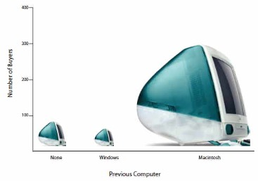
Another distortion in bar charts results from setting the baseline to a value other than zero. The baseline is the bottom of the Y-axis, representing the least number of cases that could have occurred in a category. Normally, but not always, this number should be zero. Figure 1.6 shows the iMac data with a baseline of 50. Once again, the differences in areas suggest a different story than the true differences in percentages. The percentage of Windows-switchers seems minuscule compared to its true value of 12%.
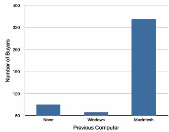
Finally, we note that it is a serious mistake to use a line graph when the X-axis contains merely qualitative variables. A line graph is essentially a bar graph with the tops of the bars represented by points joined by lines (the rest of the bar is suppressed). Figure 1.7 inappropriately shows a line graph of the card game data from Yahoo. The drawback to Figure 1.7 is that it gives the false impression that the games are naturally ordered in a numerical way when, in fact, they are ordered alphabetically.
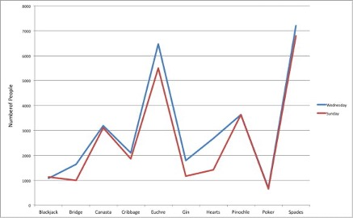
1.4 Graphing Quantitative Variables
Having considered qualitative variables, we now turn our attention to some of the common types of graphs that are used to depict quantitative variables, beginning with histograms.
1.4.1 Histograms[4]
A histogram is a graphical method for displaying the shape of a distribution. It is particularly useful when there are a large number of observations. We begin with an example consisting of the scores of 642 students on a psychology test. The test consists of 197 items, each graded as “correct” or “incorrect.” The students’ scores ranged from 46 to 167.
The first step is to create a frequency table. Unfortunately, a simple frequency table would be too big, containing over 100 rows. To simplify the table, we group scores together as shown in Table 1.2.
| Interval’s Lower Limit | Interval’s Upper Limit | Class Frequency |
| 39.5 | 49.5 | 3 |
| 49.5 | 59.5 | 10 |
| 59.5 | 69.5 | 53 |
| 69.5 | 79.5 | 107 |
| 79.5 | 89.5 | 147 |
| 89.5 | 99.5 | 130 |
| 99.5 | 109.5 | 78 |
| 109.5 | 119.5 | 59 |
| 119.5 | 129.5 | 36 |
| 129.5 | 139.5 | 11 |
| 139.5 | 149.5 | 6 |
| 149.5 | 159.5 | 1 |
| 159.5 | 169.5 | 1 |
To create this table, the range of scores was broken into intervals, called class intervals. The first interval is from 39.5 to 49.5, the second from 49.5 to 59.5, etc. Next, the number of scores falling into each interval was counted to obtain the class frequencies. There are three scores in the first interval, 10 in the second, etc.
Class intervals of width 10 provide enough detail about the distribution to be revealing without making the graph too “choppy.” More information on choosing the widths of class intervals is presented later in this section. Placing the limits of the class intervals midway between two numbers (e.g., 49.5) ensures that every score will fall in an interval rather than on the boundary between intervals.
In a histogram, the class frequencies are represented by bars. The height of each bar corresponds to its class frequency. A histogram of these data is shown in Figure 1.8.
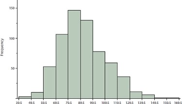
The histogram makes it plain that most of the scores are in the middle of the distribution, with fewer scores in the extremes. You can also see that the distribution is not symmetric: the scores extend to the right farther than they do to the left. The distribution is therefore said to be skewed.
In our example, the observations are whole numbers. Histograms can also be used when the scores are measured on a more continuous scale such as the length of time (in milliseconds) required to perform a task. In this case, there is no need to worry about fence-sitters since they are improbable. (It would be quite a coincidence for a task to require exactly 7 seconds, measured to the nearest thousandth of a second.) We are therefore free to choose whole numbers as boundaries for our class intervals, for example, 4000, 5000, etc. The class frequency is then the number of observations that are greater than or equal to the lower bound, and strictly less than the upper bound. For example, one interval might hold times from 4000 to 4999 milliseconds. Using whole numbers as boundaries avoids a cluttered appearance, and is the practice of many computer programs that create histograms. Note also that some computer programs label the middle of each interval rather than the end points.
Histograms can be based on relative frequencies instead of actual frequencies. Histograms based on relative frequencies show the proportion of scores in each interval rather than the number of scores. In this case, the Y-axis runs from 0 to 1 (or somewhere in between if there are no extreme proportions). You can change a histogram based on frequencies to one based on relative frequencies by (a) dividing each class frequency by the total number of observations, and then (b) plotting the quotients on the Y-axis (labeled as proportion).
There is more to be said about the widths of the class intervals, sometimes called bin widths. Your choice of bin width determines the number of class intervals. This decision, along with the choice of starting point for the first interval, affects the shape of the histogram. There are some “rules of thumb” that can help you choose an appropriate width. (But keep in mind that none of the rules is perfect.) We prefer the Rice rule, which is to set the number of intervals to twice the cube root of the number of observations. In the case of 1000 observations, the Rice rule yields 20 intervals. For the psychology test example used above, the Rice rule recommends 17. The best advice is to experiment with different choices of width, and to choose a histogram according to how well it communicates the shape of the distribution.
| Name | Formula | Value |
|---|---|---|
| Upper Hinge | 75th Percentile | 20 |
| Lower Hinge | 25th Percentile | 17 |
| H-Spread | Upper Hinge - Lower Hinge | 3 |
| Step | 1.5 x H-Spread | 4.5 |
| Upper Inner Fence | Upper Hinge + 1 Step | 24.5 |
| Lower Inner Fence | Lower Hinge - 1 Step | 12.5 |
| Upper Outer Fence | Upper Hinge + 2 Steps | 29 |
| Lower Outer Fence | Lower Hinge - 2 Steps | 8 |
| Upper Adjacent | Largest value below Upper Inner Fence | 24 |
| Lower Adjacent | Smallest value above Lower Inner Fence | 14 |
| Outside Value | A value beyond an Inner Fence but not beyond an Outer Fence | 29 |
| Far Out Value | A value beyond an Outer Fence | None |
1.4.2 Box Plots[5]
Box plots are useful for identifying outliers and for comparing distributions. We will explain box plots with the help of data from an in-class experiment. As part of the “Stroop Interference Case Study,”[6] students in introductory statistics were presented with a page containing 30 colored rectangles. Their task was to name the colors as quickly as possible. Their times (in seconds) were recorded. We’ll compare the scores for the 16 men and 31 women who participated in the experiment by making separate box plots for each gender. Such a display is said to involve parallel box plots.
There are several steps in constructing a box plot. The first relies on the 25th, 50th, and 75th percentiles in the distribution of scores. Figure 1-9 shows how these three statistics are used. For each gender, we draw a box extending from the 25th percentile to the 75th percentile. The 50th percentile is drawn inside the box. Therefore, the bottom of each box is the 25th percentile, the top is the 75th percentile, and the line in the middle is the 50th percentile. The data for the women in our sample are shown in Table 1.3.
| 14 15 16 16 17 |
17 17 17 17 18 |
18 18 18 18 18 |
19 19 19 20 20 |
20 20 20 20 21 |
21 22 23 24 24 |
29 |
For these data, the 25th percentile is 17, the 50th percentile is 19, and the 75th percentile is 20. For the men (whose data are not shown), the 25th percentile is 19, the 50th percentile is 22.5, and the 75th percentile is 25.5.
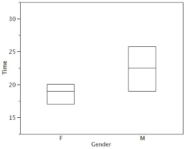
Before proceeding, the terminology in Table 1.4 is helpful.
| Name | Formula | Value |
|---|---|---|
| Upper Hinge | 75th Percentile | 20 |
| Lower Hinge | 25th Percentile | 17 |
| H-Spread | Upper Hinge - Lower Hinge | 3 |
| Step | 1.5 x H-Spread | 4.5 |
| Upper Inner Fence | Upper Hinge + 1 Step | 24.5 |
| Lower Inner Fence | Lower Hinge - 1 Step | 12.5 |
| Upper Outer Fence | Upper Hinge + 2 Steps | 29 |
| Lower Outer Fence | Lower Hinge - 2 Steps | 8 |
| Upper Adjacent | Largest value below Upper Inner Fence | 24 |
| Lower Adjacent | Smallest value above Lower Inner Fence | 14 |
| Outside Value | A value beyond an Inner Fence but not beyond an Outer Fence | 29 |
| Far Out Value | A value beyond an Outer Fence | None |
Continuing with the box plots, we put “whiskers” above and below each box to give additional information about the spread of the data. Whiskers are vertical lines that end in a horizontal stroke. Whiskers are drawn from the upper and lower hinges to the upper and lower adjacent values (24 and 14 for the women’s data).
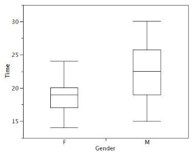
Although we don’t draw whiskers all the way to outside or far out values, we still wish to represent them in our box plots. This is achieved by adding additional marks beyond the whiskers. Specifically, outside values are indicated by small “o’s” and far out values are indicated by asterisks (*). In our data, there are no far out values and just one outside value. This outside value of 29 is for the women and is shown in Figure 1.11.
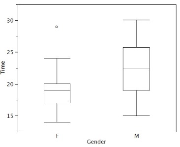
There is one more mark to include in box plots (although sometimes it is omitted). We indicate the mean score for a group by inserting a plus sign. Figure 1.12 shows the result of adding means to our box plots.
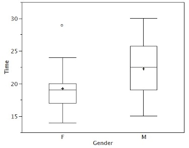
Figure 1.12 provides a revealing summary of the data. Since half the scores in a distribution are between the hinges (recall that the hinges are the 25th and 75th percentiles), we see that half the women’s times are between 17 and 20 seconds, whereas half the men’s times are between 19 and 25.5. We also see that women generally named the colors faster than the men did, although one woman was slower than almost all of the men. Figure 1.13 shows the box plot for the women’s data with detailed labels.
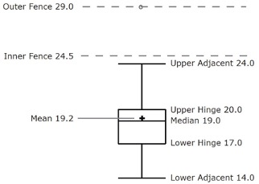
Box plots provide basic information about a distribution. For example, a distribution with a positive skew would have a longer whisker in the positive direction than in the negative direction. A larger mean than median would also indicate a positive skew. Box plots are good at portraying extreme values and are especially good at showing differences between distributions. However, many of the details of a distribution are not revealed in a box plot, and to examine these details one should create a histogram.
1.4.3 Variations on box plots
Statistical analysis programs may offer options on how box plots are created. For example, the box plots in Figure 1.14 are constructed from our data but differ from the previous box plots in several ways.
It does not mark outliers.
The means are indicated by green lines rather than plus signs.
The mean of all scores is indicated by a gray line.
Individual scores are represented by dots. Since the scores have been rounded to the nearest second, any given dot might represent more than one score.
The box for the women is wider than the box for the men because the widths of the boxes are proportional to the number of subjects of each gender (31 women and 16 men).
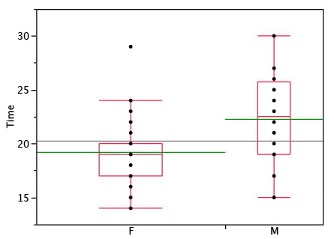
Each dot in Figure 1.14 represents a group of subjects with the same score (rounded to the nearest second). An alternative graphing technique is to “jitter” the points. This means spreading out different dots at the same horizontal position, one dot for each subject. The exact horizontal position of a dot is determined randomly (under the constraint that different dots don’t overlap exactly). Spreading out the dots helps you to see multiple occurrences of a given score. However, depending on the dot size and the screen resolution, some points may be obscured even if the points are jittererd. Figure 1.15 shows what jittering looks like.
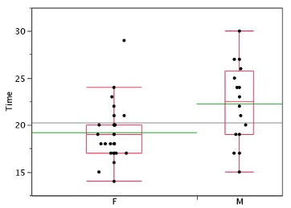
Different styles of box plots are best for different situations, and there are no firm rules for which to use. When exploring your data, you should try several ways of visualizing them. Which graphs you include in your report should depend on how well different graphs reveal the aspects of the data you consider most important.
1.4.4 Bar Charts[7]
In the section on qualitative variables, we saw how bar charts could be used to illustrate the frequencies of different categories. For example, one bar chart showed how many purchasers of iMac computers were previous Macintosh users, previous Windows users, and new computer purchasers.
In this section, we show how bar charts can be used to present other kinds of quantitative information, not just frequency counts. The bar chart in Figure 1.16 shows the percent increases in the Dow Jones, Standard and Poor 500 (S & P), and Nasdaq stock indexes from May 24th 2000 to May 24th 2001. Notice that both the S & P and the Nasdaq had “negative increases” which means that they decreased in value. In this bar chart, the Y-axis is not frequency but rather the signed quantity percentage increase.
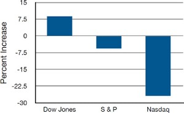
Bar charts are particularly effective for showing change over time. Figure Figure 1.17, for example, shows the percent increase in the Consumer Price Index (CPI) over four three-month periods. The fluctuation in inflation is apparent in the graph.
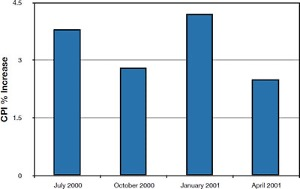
Bar charts are often used to compare the means of different experimental conditions. Figure 1.18 shows the mean time it took one of us (DL) to move the mouse to either a small target or a large target. On average, more time was required for small targets than for large ones.
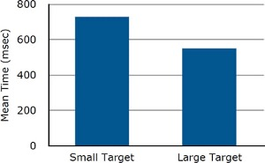
Although bar charts can display means, we do not recommend them for this purpose. Box plots should be used instead since they provide more information than bar charts without taking up more space. For example, a box plot of the mouse-movement data is shown in Figure 1.19. You can see that Figure 1.19 reveals more about the distribution of movement times than does Figure 1.18.
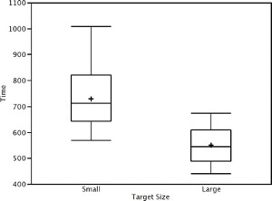
The section on qualitative variables presented earlier in this chapter discussed the use of bar charts for comparing distributions. Some common graphical mistakes were also noted. The earlier discussion applies equally well to the use of bar charts to display quantitative variables.
1.5 Chapter 1 Appendix: Calculating Percentiles Under the Third Definition[8]
Let’s begin with an example. Consider the 25th percentile for the 8 numbers in Table 1.5. Notice the numbers are given ranks ranging from 1 for the lowest number to 8 for the highest number.
| Number | Rank | |||
| 3 5 7 8 9 11 13 15 |
1 2 3 4 5 6 7 8 |
The first step is to compute the rank (R) of the 25th percentile. This is done using the following formula:
\[ R = P/100 x (N + 1) \]
where P is the desired percentile (25 in this case) and N is the number of numbers (8 in this case). Therefore,
\[ R = 25/100 x (8 + 1) = 9/4 = 2.25. \]
If R is an integer, the Pth percentile is the number with rank R. When R is not an integer, we compute the Pth percentile by interpolation as follows:
Define IR as the integer portion of R (the number to the left of the decimal point). For this example, IR = 2.
Define FR as the fractional portion of R. For this example, FR = 0.25.
Find the scores with Rank IR and with Rank IR + 1. For this example, this means the score with Rank 2 and the score with Rank 3. The scores are 5 and 7.
Interpolate by multiplying the difference between the scores by FR and add the result to the lower score. For these data, this is (0.25)(7 - 5) + 5 = 5.5.
Therefore, the 25th percentile is 5.5. If we had used the first definition (the smallest score greater than 25% of the scores), the 25th percentile would have been 7. If we had used the second definition (the smallest score greater than or equal to 25% of the scores), the 25th percentile would have been 5.
For a second example, consider the 20 quiz scores shown in Table 1.6.
| Score | Rank | |||
| 4 4 5 5 5 5 6 6 6 7 7 7 8 8 9 9 9 10 10 10 |
1 2 3 4 5 6 7 8 9 10 11 12 13 14 15 16 17 18 19 20 |
We will compute the 25th and the 85th percentiles. For the 25th,
\[ R = 25/100 x (20 + 1) = 21/4 = 5.25. \]
\[ IR = 5 \text{ and } FR = 0.25. \]
Since the score with a rank of IR (which is 5) and the score with a rank of IR + 1 (which is 6) are both equal to 5, the 25th percentile is 5. In terms of the formula:
\[ \text{ 25th percentile } = (.25) x (5 - 5) + 5 = 5. \]
For the 85th percentile,
\[ R = 85/100 x (20 + 1) = 17.85. \]
\[ IR = 17 \text{ and } FR = 0.85 \]
Caution: FR does not generally equal the percentile to be computed as it does here.
The score with a rank of 17 is 9 and the score with a rank of 18 is 10. Therefore, the 85th percentile is:
\[ (0.85)(10 - 9) + 9 = 9.85 \]
Consider the 50th percentile of the numbers 2, 3, 5, 9.
\[ R = 50/100 x (4 + 1) = 2.5. \]
\[ IR = 2 \text{ and } FR = 0.5. \]
The score with a rank of IR is 3 and the score with a rank of IR + 1 is 5. Therefore, the 50th percentile is:
\[ (0.5)(5 - 3) + 3 = 4. \]
Finally, consider the 50th percentile of the numbers 2, 3, 5, 9, 11.
\[ R = 50/100 x (5 + 1) = 3. \]
\[ IR = 3 \text{ and } FR = 0. \]
Whenever FR = 0, you simply find the number with rank IR. In this case, the third number is equal to 5, so the 50th percentile is 5. You will also get the right answer if you apply the general formula:
\[ \text{ 50th percentile }= (0.00) (9 - 5) + 5 = 5. \]
[1] This section is adapted from Heidi Ziemer. “Variables.” Online Statistics Education: A Multimedia Course of Study. http://onlinestatbook.com/2/introduction/variables.html
[2] This section is adapted from David M. Lane. “Percentiles.” Online Statistics Education: A Multimedia Course of Study. http://onlinestatbook.com/2/introduction/percentiles.html
[3] This section is adapted from David M. Lane. “Graphing Qualitative Variables.” Online Statistics Education: A Multimedia Course of Study. http://onlinestatbook.com/2/graphing_distributions/graphing_qualitative.html
[4] This section is adapted from David M. Lane. “Histograms.” Online Statistics Education: A Multimedia Course of Study. http://onlinestatbook.com/2/graphing_distributions/histograms.html
[5] This section is adapted from David M. Lane. “Box Plots.” Online Statistics Education: A Multimedia Course of Study. http://onlinestatbook.com/2/graphing_distributions/boxplots.html
[6] http://onlinestatbook.com/2/case_studies/stroop.html
[7] This section is adapted from David M. Lane. “Bar Charts.” Online Statistics Education: A Multimedia Course of Study. http://onlinestatbook.com/2/graphing_distributions/bar_chart.html
[8] This section is adapted from David M. Lane. “Percentiles.” Online Statistics Education: A Multimedia Course of Study. http://onlinestatbook.com/2/introduction/percentiles.html